SkillProx：通过近端文本梯度下降实现自演化智能体技能
《SkillProx: Self-Evolving Agent Skills via Proximal Textual Gradient Descent》研究的是一种不更新模型权重、而是持续编辑外部文本技能的 Agent 学习方式。作者包括 Mingxuan Zheng、Yujin Zhou、Chuxue Cao 等；第一作者主机构为香港科技大学，澳门大学参与合作。论文于 2026 年 8 月 7 日提交，来源为 arXiv:2608.07449。作者提供的 SkillProx 代码仓库 已核验可访问。
这篇论文的重点并不是再设计一种更会“写提示词”的 Agent，而是把技能演化改造成有反馈、有回滚、也有删减的生命周期：新规则先经过同批次执行结果检验，已有规则再接受逐单元效用审计与验证门控收缩。论文在 SpreadsheetBench Verified 上训练技能，并用 WikiTableQuestions、HiTab 检验跨分布迁移；因此它同时讨论了文本优化机制、结构复杂度和 Agent 工程中的持续维护问题。
现有技能演化常把语言模型生成的失败诊断直接当作正确更新方向，却不重新执行来确认补丁是否真正改善任务；持续追加又会积累重复、冲突或只适用于单个任务的规则，而删除没有被当作专门的知识整合机制。
1. 背景和问题
1.1 从一次性技能合成到持续演化
这里的“技能”不是模型参数，而是推理时被加载进上下文的结构化文本工件：主文件 SKILL.md 保存始终可见的通用流程，references/ 保存按需读取的操作细节、示例和验证步骤。它把成功轨迹中的程序性知识外化出来，具有可编辑、可复用、无需重新训练基础模型等优点。对工具型 Agent 而言，这种形态很现实：某个表格处理、检索或代码操作经验可以写成规则，下次任务直接调用；代价则是技能质量完全取决于文本如何产生、验证和维护。
早期路线多做一次性合成，从演示、成功轨迹或外部文档蒸馏出技能。论文引用的 SkillsBench 观察到，同一份技能面对不同任务和不同执行模型时，收益不均匀，自动生成技能甚至可能带来负收益。于是 SkillOpt、SkillGrad 等方法把失败轨迹转成“文本梯度”，执行、诊断、修改技能，再进入下一轮。这个转向很重要，因为技能不再是固定说明书，而成为随经验变化的程序性记忆；但“能够变化”不等于“变化受到控制”。
1.2 两个缺口：未经验证的新增与无人负责的删除
第一类缺口发生在前向更新。开放环流程看到失败后，由诊断器总结原因、由补丁器写入新规则，随后就把候选技能永久提交。语言上合理的诊断可能仍然不可执行、过度特化，甚至让原来能做对的任务退化。更关键的是，后续诊断只知道“之前写了什么”，不知道该修改使 hard accuracy 或 cell accuracy 上升还是下降。这样形成的更新历史记录了文本动作，却没有记录动作后果。
第二类缺口发生在累积知识。不断追加规则会让技能变长，但长度不是能力的代理。同一句“编码前先手工跟踪一个例子”可能在多个章节反复出现，其中一处是有帮助的解释原则，另一处却夹带训练题特有的阈值和代码模板。普通编辑器即使允许删除，也不会系统地询问“删掉这个知识单元，验证集表现会怎样”。SkillProx 的动机分析给出一个代表性案例：移除负效用内容后，OJ hard accuracy 从 46% 升到 54%，同时技能缩短 3.12%。这个结果不是总体平均效应，却说明只增不删会把有害规则留在长期记忆中。
因此论文把问题写成两个时间尺度：训练批次内需要阻断刚产生的坏更新，训练完成后需要清理在更广验证分布上暴露出来的冗余或冲突。前者要求候选补丁在相同任务上重执行、拒绝后回滚，并把测得的结果反馈给下一次诊断；后者要求把技能拆成可消融单元，先测边际效用，再对低效用单元做合并、降级或删除。闭环门控只能证明某次补丁没有伤害当前 batch，不能保证它在未来分布上有益；后验收缩也只能在有限验证集上提供经验约束，不能把随机评估变成理论保证。
这个问题与推荐系统和大模型应用都有直接联系。推荐链路中的特征说明、召回规则、过滤约束和排障手册同样会随实验累积；若只追加成功经验而不记录失败修改的结果，规则库会逐渐产生条件重叠和版本冲突。对具备记忆和工具调用的大模型 Agent，技能又比普通检索文档更接近可执行策略，一条过度概括的指令可能改变文件、数据库或外部服务状态。因此，技能维护不能只依赖语义相似度、摘要质量或文本长度，而要把真实执行结果、回滚能力、验证分布和结构依赖同时纳入治理。
论文借用 proximal gradient descent 的“前向改善任务目标、后向处理复杂度正则”来组织这两类操作。需要特别注意，这是一种结构类比：文本技能离散、不可微，系统没有数值梯度，也没有真的求解近端子问题，参数 $\lambda$ 和步长 $\eta$ 也不作为实现输入。理解这一边界很重要，否则容易把一个执行—验证工作流误读成有经典收敛结论的优化算法。
2. 方法
2.1 从复合目标到前向—后向职责分工
符号解释：$Q(X)$ 是技能 $X$ 的知识单元集合，$q_i$ 是第 $i$ 个可被完整移除和重新评估的单元，$m$ 是单元总数。这个定义约束了删除粒度：移除一个 L2 单元意味着删除对应章节；移除一个 L3 单元还要删除引用文件及所有指针，不能留下结构悬挂。
符号解释：$L_{\mathcal{T}}(X)$ 是未知任务分布 $\mathcal{T}$ 上的期望损失，$G(X)$ 是主技能文件与所有活动 reference 文件的字符数，$\lambda$ 表示性能与复杂度之间的概念权衡。实现不会直接计算 $L_{\mathcal{T}}$，也不会输入 $\lambda$；公式的作用是说明只优化任务表现而不控制结构，会让第二项无限增长。
符号解释：$x_k$ 是第 $k$ 步连续变量，$\eta$ 是步长，$f$ 是平滑任务目标，$g$ 是复杂度正则，$\operatorname{prox}$ 是近端算子。SkillProx 只保留职责切分：自然语言诊断与补丁承担不精确的“前向算子”，冻结效用审计和语义收缩承担离散“后向算子”。核心贡献不是把文本伪装成可微参数，而是让“写入什么”和“保留什么”分别接受可观测结果约束。
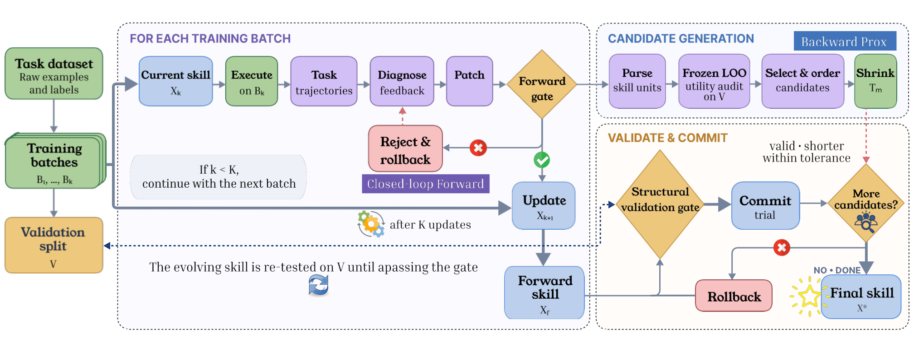
Figure 1 左侧从任务数据构造训练 batch 和固定验证集。每个 batch 内，当前技能先执行，轨迹交给诊断器和补丁器；候选若通过 Forward gate 就成为下一版技能，失败则回滚，拒绝原因重新送回诊断器。完成 $K$ 次更新后得到 $X_f$。右侧把 $X_f$ 解析成知识单元，在验证集 $V$ 上执行冻结 leave-one-out 审计，按效用筛选候选；Shrinker 每次只处理一个目标，经过结构有效、确实变短和性能容忍度检查后才提交，否则继续使用原状态。图中“More candidates?”意味着后向阶段是有限单遍遍历，而不是让生成器围绕同一内容无限改写。图中训练 batch 与验证集由两条路径进入系统，也强调了即时回退证据和跨任务整合证据并不互换。
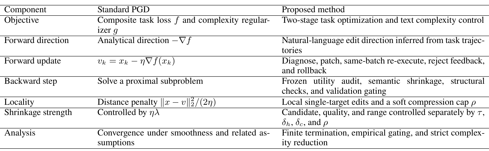
Table 1 逐行划清了类比的边界。标准 PGD 的方向来自解析梯度，SkillProx 的方向来自任务轨迹和语言诊断；标准 backward step 求近端子问题，这里则是冻结审计、单目标语义收缩、结构检查与验证门控；标准局部性靠欧氏距离惩罚，这里靠只触碰目标单元及至多一个接收章节，并设置软压缩上限。最后一行尤其关键：论文只保证候选集合有限、接受编辑严格变短等实现性质，不声称平滑假设下的经典收敛。这里的 $\tau$、$\delta_h$、$\delta_c$ 与 $\rho$ 分别控制候选范围、质量容忍和收缩范围，并不等同于连续优化里由 $\eta\lambda$ 统一决定的强度；所以表中“结构对齐”应读成设计语言，而不是数学等价证明。
2.2 Closed-Loop Forward：同批次重执行、回滚与反馈
前向迭代 $k$ 先用当前技能 $X_k$ 执行训练批次 $B_k$。诊断器同时读取失败轨迹、对照成功轨迹、最近接受/拒绝历史，以及同一迭代上一候选为何被拒绝；Patcher 从迭代开始时的同一个快照产生第 $j$ 个候选 $\widetilde X_k^{(j)}$。关键步骤不是“生成补丁”，而是候选必须回到同一批次重新执行：
符号解释：$H_{B_k}$ 是批次中全部测试单元都正确的任务比例，$C_{B_k}$ 是平均 cell accuracy，$\mathbf{1}[\cdot]$ 是指示函数；两个条件都成立才接受候选。若某次尝试带来严格 hard 提升，搜索提前结束；否则最多尝试三次，再在合格候选中按 hard、cell 的字典序选择最好者。没有候选过门就恢复 $X_k$，不把“看起来合理”的修改写入长期技能。
回滚本身还不够，SkillProx 把拒绝变成下一轮可用的信息。迭代内反馈包含 hard/cell 变化和失败编辑方向，避免诊断器立即重复相同错误；跨迭代历史保留最近六条接受/拒绝摘要，使后续诊断知道哪些类型的文本修改在真实执行后有效。附录里的 momentum agent 把逐任务诊断汇总为持久模式记录和本轮 overlay，Patcher 又同时读原始诊断，降低摘要压缩抹掉任务证据的风险。训练时这些模块参与技能演化；最终部署时只加载产出的技能文本，不再运行诊断器和 Patcher。
该门控只比较当前 batch，不能推出验证集或测试集跨迭代单调。同批次复用还有过拟合风险：某条规则可能恰好修复四个训练任务，却在更广任务上产生冲突。因此前向闭环的定位是“在线拦截明显回退”，而不是完整的泛化筛选器，这也解释了为什么后向阶段必须使用固定验证集重新审计。
2.3 Frozen Utility Audit：把技能拆成可审计知识单元
前向结束得到 $X_f$ 后，系统把每个 L2 章节和每个 L3 reference group 解析为知识单元。它先在固定验证集 $V$ 上测完整技能，再逐一构造删除单元 $q_i$ 的副本，定义两种边际效用：
符号解释：$\operatorname{Ablate}(X_f,q_i)$ 是完整移除单元后的技能；正效用表示删除会使指标下降，负效用表示删除后反而更好。hard 对“整项任务是否完全成功”敏感，cell 能捕捉部分正确程度，两者共同避免只看一个离散指标。审计需要一次完整基线评估和 $n$ 次 leave-one-out 评估，成本会随知识单元数和验证任务数线性增长。
符号解释：默认 $\tau=-0.001$，只纳入明显负效用单元；$<_{\mathrm{lex}}$ 表示先按 cell 效用、再按 hard 效用升序，最可疑的单元先处理。所有效用在 Prox 开始前只测一次，随后保持冻结。这样成本可控，也避免每次编辑都重新排列整个候选集；代价是早先接受的合并会改变剩余单元的真实边际作用，所以冻结分数只能用于资格与顺序，不能直接授权删除。
2.4 Prox：单目标语义收缩与验证门控
对每个候选，Shrinker 在当前活动技能的临时副本里执行最轻的合法操作：优先把独特且可泛化的内容合并进最重叠的保留章节，再移除目标；如果 L2 过细则降级进 L3；完全重复或误导时才纯删除。它只允许触碰目标和必要时的一个接收章节，并清理孤儿引用。候选首先必须结构有效且严格变短：
符号解释：$X^{(m)}$ 是处理第 $m$ 个候选前的活动技能，$T_m$ 是临时收缩结果，$G$ 计算所有活动 Markdown 字符。结构门阻止断链、重复指针或丢失引用；严格不等式使每个接受动作都有真实复杂度下降。
符号解释：$\delta_h$ 和 $\delta_c$ 是每次编辑允许的 hard 与 cell 绝对下降，默认 hard 不得下降、cell 最多下降 0.02；$\rho$ 是处理下一候选前相对 $X_f$ 检查的累计压缩阈值。因为阈值在提交新 trial 前检查，最后一次接受编辑可能让总压缩超过 10%，所以 $\rho$ 是软停止线，不是最终长度的硬上界。
符号解释：$X^\star$ 是最终技能，$R$ 是接受的收缩数，$M$ 是实际尝试候选数，$|V|$ 是验证任务数。有限候选和单遍处理保证算法终止；但 cell 下界会随接受次数累积变松，反复查询同一验证集还会产生自适应过拟合。作者据此只称其为“记录指标上的经验约束”。
符号解释：$\theta=(\tau,\delta_h,\delta_c,\rho)$ 是收缩配置，$c_i$ 是候选带来的复杂度下降。只有当各候选收缩量近似相同时，原始效用阈值 $\tau$ 才能近似一个共享正则强度；一般情况下，每个候选对应不同隐式权重 $\lambda_i$。因此论文的 $\tau$ 曲线是阈值诱导的经验权衡，不是公式化目标里 $\lambda$ 的精确正则路径。
3. 实验结果
3.1 设置、基线与评价口径
训练与 IID 测试使用 SpreadsheetBench Verified，这是经过人工核验、可自动评价的电子表格任务子集；OOD 使用 WikiTableQuestions 和 HiTab，分别带来不同表格结构与答案空间。数据按 2:1:8 划分训练、验证和测试，训练最多选 40 个初始失败任务，batch size 为 4，计划十次更新，连续四个 batch 全对则提前停止。效用审计使用 20 个验证任务、每题一个测试用例；最终 OJ 使用固定 100 个任务、每题三个测试用例，只有三个 cell 都正确才计 hard success。
比较方法包括无技能、人工技能、一次性或轨迹蒸馏技能 EvoSkill 与 Trace2Skill，以及自演化方法 SkillOpt、SkillGrad。执行模型覆盖 Qwen3.5-4B、Qwen3.5-27B、Qwen3.6-27B；主表报告多个 seed 的均值与标准差。推理服务运行在 H800 上，电子表格结果由 LibreOffice 重算后评分。这里没有线上 Agent 流量或真实生产延迟指标，结论应限定在这些离线表格任务、实现配置和公开 backbone 范围内。
3.2 IID 与 OOD 主结果
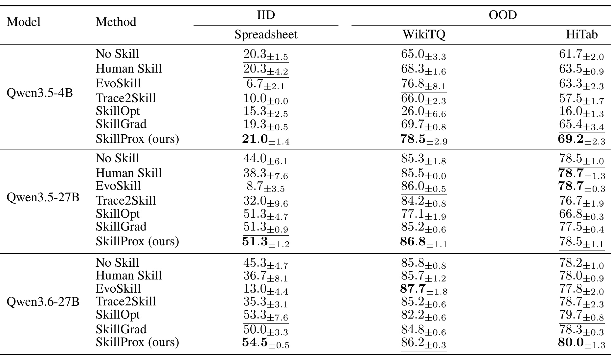
Table 2 首先显示人工技能并不稳定：在 Qwen3.5-27B 与 Qwen3.6-27B 的 Spreadsheet 上，Human Skill 分别只有 38.3 和 36.7，低于 No Skill 的 44.0 和 45.3，说明固定技能可能与执行模型不匹配。SkillProx 把对应结果提高到 51.3 和 54.5；4B 上也从 Human Skill 的 20.3 增到 21.0。与最强 gradient-based baseline 比，事实包所概括的平均优势约为 3.0 个百分点，但逐格看并非所有任务都第一。例如 Qwen3.6-27B 的 WikiTQ 上 EvoSkill 为 87.7，高于 SkillProx 的 86.2；Qwen3.5-27B 的 HiTab 上 SkillProx 78.5，也没有超过 78.7 的最佳值。
更有价值的是迁移结构。4B 上 SkillOpt 在 WikiTQ/HiTab 只有 26.0/16.0，而 SkillProx 达到 78.5/69.2；27B 上 SkillProx 的 OOD 结果也没有出现类似崩塌。这支持“闭环更新与后验整合减轻训练分布特化”的解释，但还不能把改善全部归因于 Prox：不同方法的提示、实现和优化预算可能不同，三套 benchmark 又都属于结构化表格推理，距离开放网页、长时工具交互或多模态 Agent 仍很远。
3.3 组件消融与跨 seed 稳定性
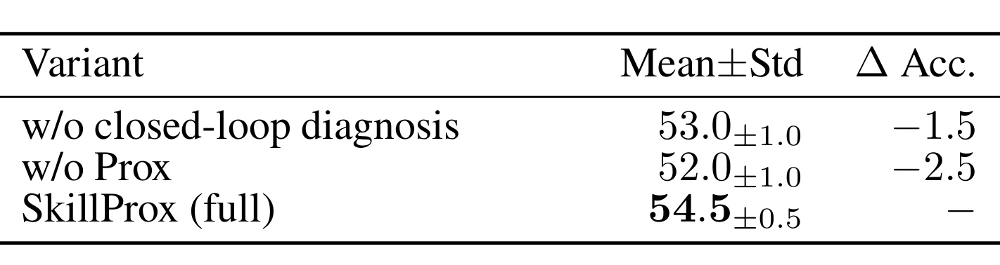
Table 3 在 Qwen3.6-27B 的 SpreadsheetBench 上分离两个阶段：完整 SkillProx 为 $54.5\pm0.5$；去掉 closed-loop diagnosis、只保留 Prox 后为 $53.0\pm1.0$，下降 1.5 点；保留闭环前向、去掉 Prox 后为 $52.0\pm1.0$，下降 2.5 点。这个消融说明前向阻断坏补丁与后向清理累积知识各有增益，而且 Prox 在该配置下的边际更大。它也提醒我们，闭环门控并未消除验证分布上的负效用规则，否则去掉后向收缩不应继续损失 2.5 点。三行结果来自同一 backbone 与训练配置，适合做组件比较，但单一数据集和固定训练 seed 仍不足以证明任意任务上 Prox 都比闭环更重要。
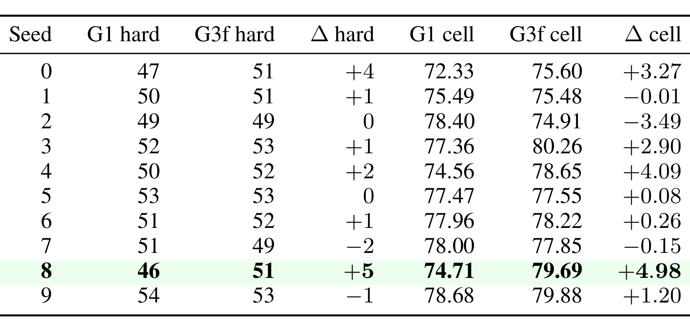
Table 8 给出比单次消融更细的稳定性证据：同训练 ID 和 batch 划分下，闭环 G3f 对开放环 G1 在 hard 上六胜、二平、两负，平均提高 1.10 点；cell 平均提高 1.31 点。hard 的跨 seed 标准差从 2.50 降到 1.51，最低值从 46 抬到 49，更像是稳定下尾而非统一抬高上限。seed 8 的 hard 提升最大，从 46 到 51，但它也是最弱的开放环起点；表里 seed 7 和 seed 9 仍下降 2 点和 1 点。作者还报告开放环成绩与提升的相关系数为 -0.800，但基线同时出现在横轴和差值中，存在数学耦合与均值回归，不能当成“越弱越受益”的因果规律。
seed 8 的运行轨迹能说明门控确实工作：十次迭代产生 22 次候选，八次降低同 batch hard 的尝试被拒绝，第二轮三次都失败后整轮恢复，开放环对应十个补丁则全部直接提交。这个案例支持机制存在，却没有证明八次拒绝在测试集上都一定有害。训练 batch 门与最终验证门观察的是不同样本，二者提供的是互补过滤，而不是同一结论的重复计算。
3.4 压缩—性能权衡与模型规模差异
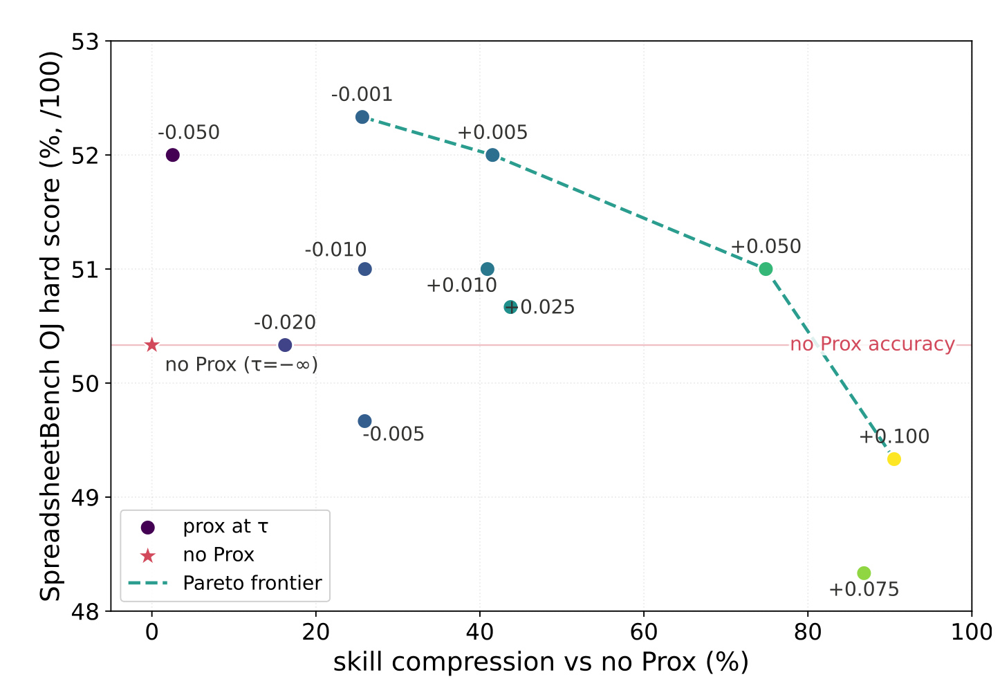
Figure 2 的 no-Prox 锚点 hard 约为 50.3%。$\tau=-0.001$ 时压缩 25.7%，hard 达到最高的 52.3%；$\tau=0.005$ 时压缩扩至 41.5%，hard 仍有 52.0%；$\tau=0.050$ 时约 74.9% 文本被移除，hard 仍是 51.0%。当压缩超过约 80% 后表现开始明显下降。它说明适度删减不只是节省上下文，也可能减少重复规则的互相干扰。虚线只连接非支配点，散落在其下方的阈值配置说明“候选更多”并不自动带来更优折中；同一压缩率附近仍会因删除对象不同而产生差异。但该扫描为隔离 $\tau$ 的作用，把 hard/cell 容忍都放宽到 1.0，并取消 10% 软 cap，不能直接等同于完整部署配置的安全曲线。
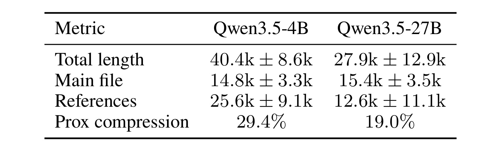
Table 4 显示 4B 最终技能平均 40.4k 字符，27B 为 27.9k，前者约长 45%；然而主文件分别为 14.8k 和 15.4k，几乎相同，差异来自 references 的 25.6k 对 12.6k。4B 经 Prox 的平均压缩率为 29.4%，也高于 27B 的 19.0%。这意味着不能只对主文件做长度限制，否则会漏掉决定总上下文成本的按需资源；工程验收应同时统计活动 reference、指针覆盖和实际加载频率。表里的标准差很大，特别是 27B 总长度与 reference 长度，说明 seed 路径差异不可忽略。一种合理但仍属解释性的判断是：较小模型需要更多外部操作细节，并且更容易把诊断转成写入，因此后验收缩处理了更多 reference 内容。
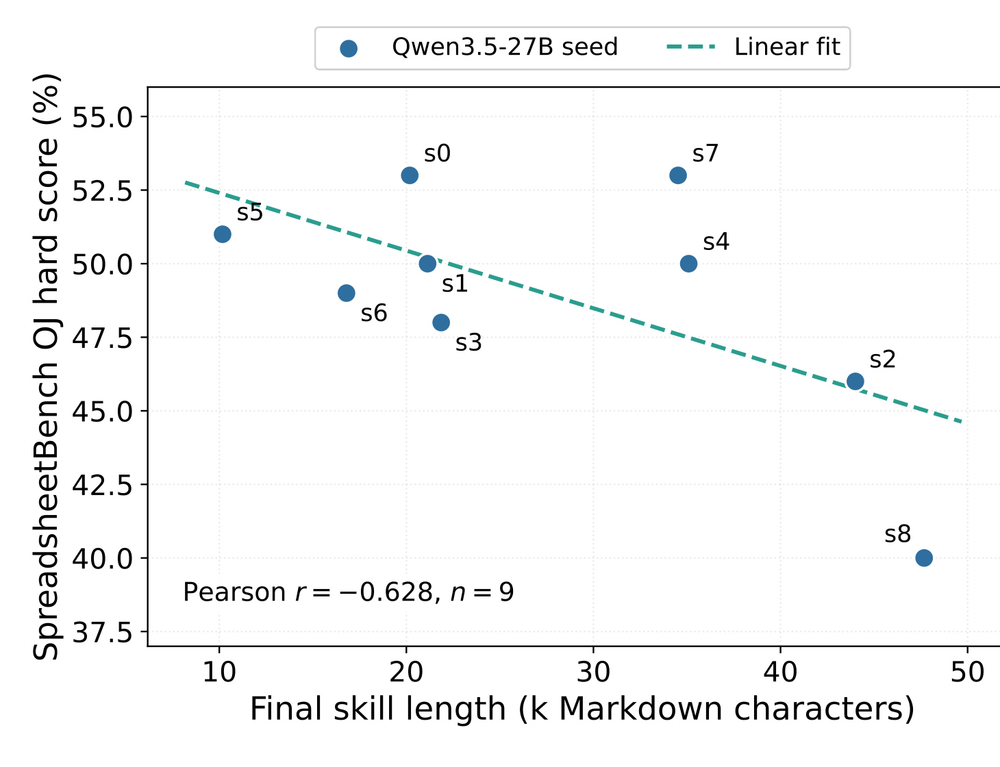
Figure 4 中九个 Qwen3.5-27B seed 的最终技能长度与 SpreadsheetBench OJ hard 呈描述性负相关，$r=-0.628$。散点而非拟合线更值得看：约 48k 字符的 s8 只有 40 分，对斜率影响很大；去掉 s8 后，相关降到 -0.330。其余点也没有围绕拟合线形成很窄的带状分布，例如约 20k 与 35k 附近都出现明显纵向差异。图里没有误差条，也没有同一 seed 的长度干预实验，因此拟合线只是在不同训练轨迹间做描述。因而证据只支持“更长不是更好”的否定结论，不足以支持“越短越准”的单调规律。技能长度还混合了任务难度、模型写作风格、reference 粒度和 seed 路径，不能单独作为质量指标。
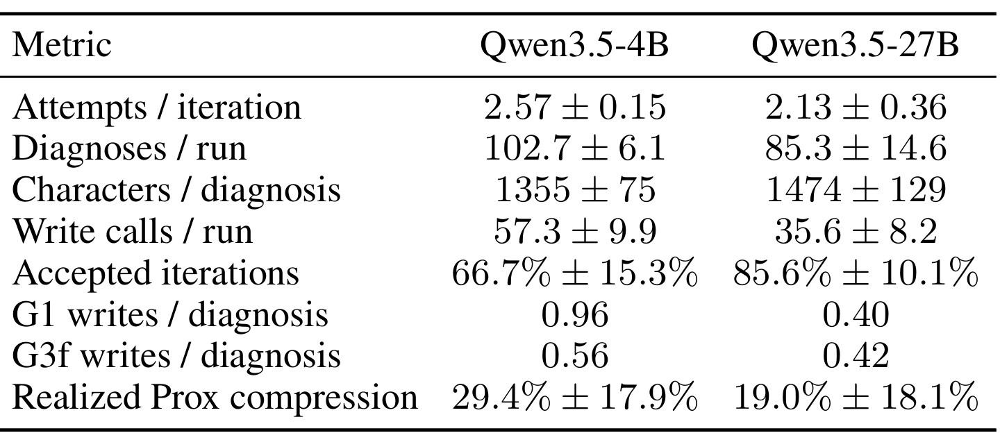
Table 16 补上过程层证据。4B 每轮尝试 $2.57\pm0.15$ 次、每次 run 诊断 $102.7\pm6.1$ 次、写调用 $57.3\pm9.9$ 次，均高于 27B 的 $2.13\pm0.36$、$85.3\pm14.6$、$35.6\pm8.2$。4B 的接受迭代比例只有 $66.7\%\pm15.3\%$，27B 为 $85.6\%\pm10.1\%$；其写入/诊断从开放环 0.96 降到闭环 0.56，而 27B 由 0.40 变为 0.42。字符/诊断一项反而由 1355 增到 1474，表明关键差异不是单次文本写得更短，而是大模型更少触发写入。组合这些指标，比只看最终长度更能支持“闭环是外部更新过滤器，并对较小模型约束更强”的解释。
3.5 Seed 8 案例：负效用知识删减是否真的有效
论文追踪一个顺序扫描失败：reference value 应在每次满足条件后更新。开放环技能把它写成“编码前先跟踪具体例子”的元指令，并嵌入硬编码的 value ≥ reference × 1.10 模板，其 cell/hard 效用为 -0.0337/-0.0556；闭环技能写成可执行规则——命中后把 reference 更新为当前值，效用变为 +0.0495/+0.0474。差别不只是字数，而是新规则是否产生可由同批次重执行检验的行为后果。
前向闭环结束后仍有两个负效用单元。Prox 对十六个知识单元审计，五个候选低于阈值；Shrinker 尝试后只有一个 consolidation 被接受，其余四个删除会伤害当前验证 hard 或 cell，因而回滚。这说明 leave-one-out 的负分不是删除许可证：单元间相互依赖，冻结审计时看似有害的内容，在先前合并改变活动状态后可能重新变得重要。
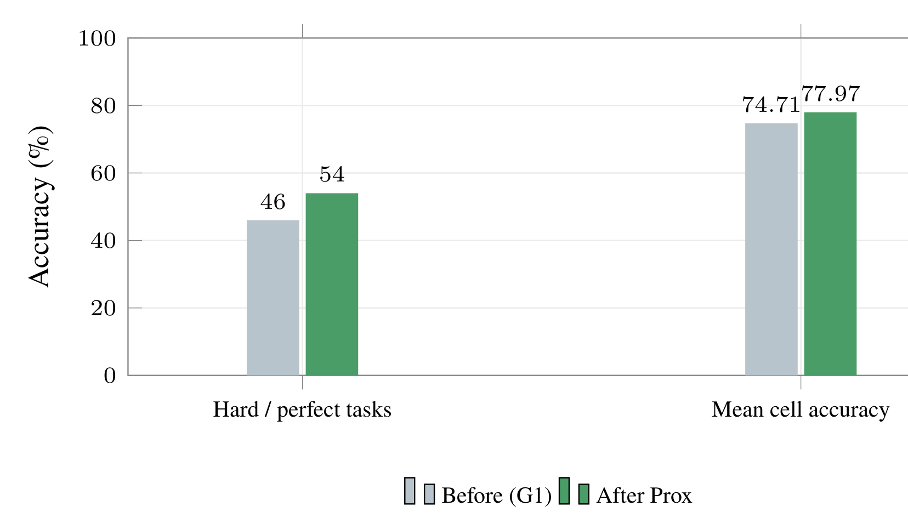
Figure 3 中，独立 OJ hard 从 46% 升到 54%，mean cell 从 74.71% 升到 77.97%。柱图同时展示两种指标，避免把“多八个任务完全通过”误写成每个 cell 都提高八点。hard 要求一题的三个测试用例都 cell-perfect，因此它会放大跨过完整通过门槛的变化；mean cell 则更平滑，能反映仍未全对任务的局部修复。两组柱没有显示跨 reroll 方差，这也是图上无法回答的重要问题，不能据此估计置信区间。作者使用固定 100 任务、每题三个测试用例，但前后推理在 temperature 0.7 下独立生成，并未锁定采样随机性，所以这组变化是与 consolidation 相关的结果，不是严格配对的单编辑因果效应。
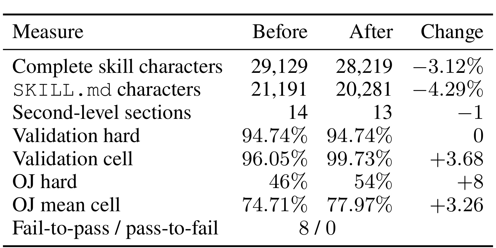
Table 14 把机制链闭合：完整技能从 29,129 缩至 28,219 字符，减少 3.12%；主文件减少 4.29%，二级章节从 14 个减到 13 个。验证 hard 保持 94.74%，validation cell 从 96.05% 增到 99.73%，说明编辑确实通过提交门。独立 OJ 有八个 fail-to-pass、零个 pass-to-fail，但其中一个前态失败来自推理 API 错误；保守排除后仍有七个可评分改善。表中 validation 与 OJ 的分母和随机条件不同，不能把两列变化直接相加或互相验证；零个 pass-to-fail 也只是这次生成的观测。最强的局部因果证据是“目标模板被合并删除且验证门未退化”，而 OJ 的 +8 应被视为独立生成下的关联改善。
4. 总结
4.1 我的判断与工程启发
SkillProx 最值得借鉴的是治理思路：让知识写入带结果反馈，让知识保留带可撤销审计。它比“不断让 LLM 总结经验”多了两个硬连接——候选补丁回到同一 batch 重执行，低效用单元必须经过当前状态上的二次验证才能提交。对长时 Agent、RAG 操作手册和推荐系统策略库，这对应一条可落地链路：把经验规则拆成有所有权和指针的单元，记录每次修改前后指标，保留回滚快照，再定期用冻结回放集清理冲突或过时规则。尤其在推荐系统中，可以把离线特征规则、召回模板、重排约束和评估 checklist 当作外部技能，但上线前仍必须用时间切分回放和在线实验替代论文里的小规模同批次门控。
论文也提供了一个有用的反直觉：压缩不是只为省 token。Figure 2 的中等压缩区同时提高准确率，Table 4/16 又显示小模型产生更多 reference 写入并接受更少候选，说明上下文干扰、规则重复和执行模型容量之间存在耦合。不过字符数只是粗糙复杂度；真正的工程目标还应计入检索命中率、加载延迟、工具权限、规则覆盖、冲突图以及错误恢复成本。
4.2 局限、复现与后续跟进
主要局限至少有五项。第一，leave-one-out 审计需要 $O(n|V|)$ 任务执行，知识单元增加后成本明显；验证集只有 20 题，还会被多次自适应查询。第二，同 batch 重执行容易挑出对当前失败分布有效的规则，不能替代时间外和领域外验证。第三，知识单元由 LLM 按 L2/L3 结构分解，相关规则可能被错误拆开，冻结效用又忽略合并后的交互变化。第四，实验集中在表格任务与 Qwen 系列，尚未覆盖带不可逆工具副作用、权限边界或长时环境状态的 Agent。第五，seed 8 案例因最大提升而被选择，前后 OJ 又是独立随机生成，不能外推成平均因果收益；代码虽已公开，但完整运行成本、H800 资源和所有实验工件仍需复核。
复现时应先固定训练 ID、batch 分区、验证集、OJ 任务和推理随机配置，分别重跑 G1、G3f、G2D、G3D 四个条件；随后核对每次候选的迭代快照、拒绝原因、hard/cell 变化和结构 diff，而不是只比较最终文件。对 Prox，应保存完整单元清单、消融分数、候选顺序、Shrinker 变更和二次验证结果，并报告每次接受编辑的字符下降与累计 cell 容忍。还应增加配对采样或多次 reroll，判断 OJ 改善对随机性的敏感度。
后续最值得跟进三条：其一，把单单元 leave-one-out 扩展为小规模交互审计或因果图，测试两个弱单元组合后是否成为必要知识；其二，用滚动验证或保留审计集控制反复查询导致的过拟合，并给 hard/cell 门控加置信区间；其三，把 $G(X)$ 从字符数升级为实际加载 token、检索成本、执行延迟和权限风险的多维复杂度。若这些问题得到解决，SkillProx 的“写入验证—冻结审计—动态提交”可从论文里的文本技能优化，进一步发展为可追溯的 Agent 知识运维机制。